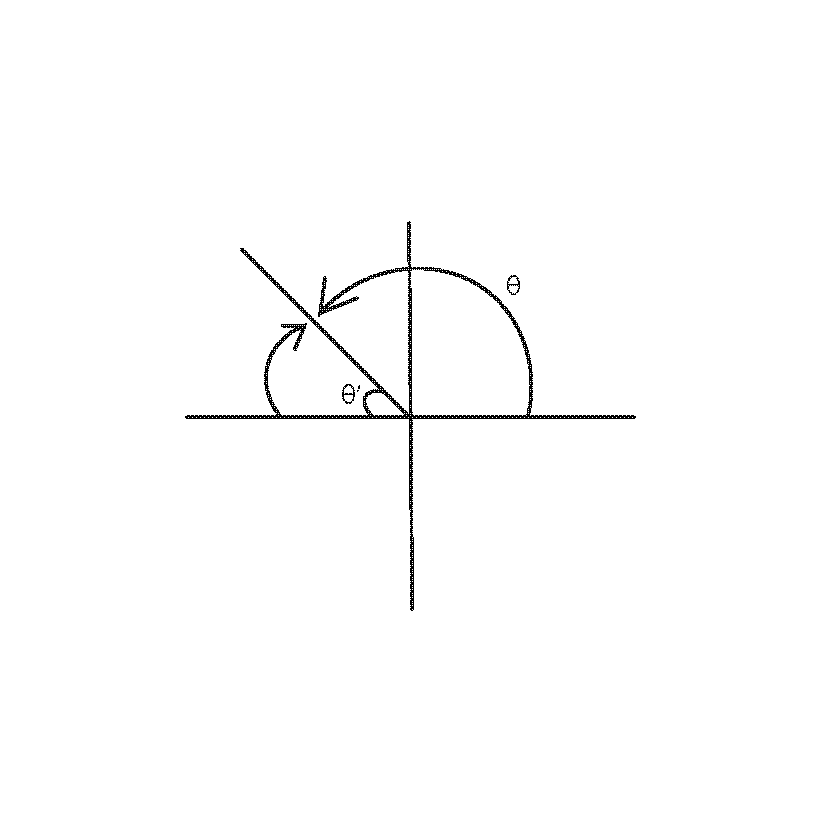
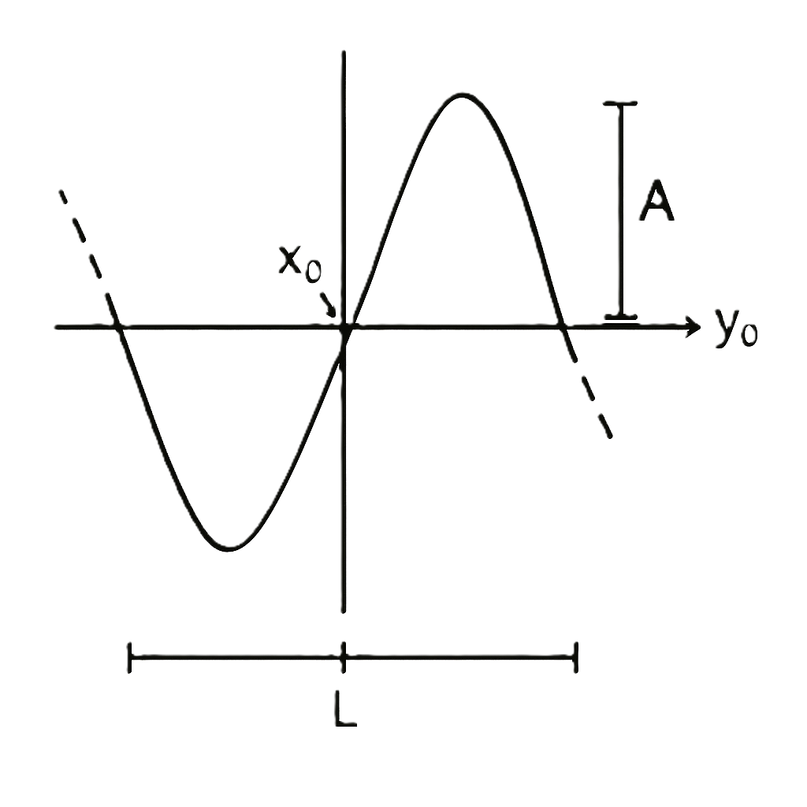

1.1. Functions#
1.1.1. Manipulating functions#
{kind=link}
{kind=link}
Scaling \(f(cx)\) compresses f horizontally by c.
Scaling \(f(x/c)\) stretches f horizontally by c.

Scaling \(f(x)/c\) compresses f vertically by c.
Scaling \(cf(x)\) streches f vertically by c.
{kind=link}
1.1.2. Evaluating and Manipulating Trigonometric Functions#

Each quadrant of the unit circle corresponds to a positive trigonometric function as represented by “A(all)+”, “T(tangent)+”, “S(sine)+”, “C(cosine)+”.
The given unit circle has a triangle drawn within which represents how trigonometric functions are related to lengths and heights of the sides of right traingles. The circle has a radius and is centered at (0,0). A point on the circle is defined by angle \(\theta\) measured counterclockwise from the positive x-axis. The trigonometric functions describe how the coordinates of a point on the unit circle relate to the angle \(\theta\).
Angles can be measured in degrees of radians
1.1.2.1. Special Angles#

At \( \theta = 30^{\circ} \):
At \( \theta = 60^{\circ} \):
{kind=link}
At \( \theta = 45^{\circ} \)
What about \( \theta \ge 90^{\circ}(\frac{\pi}{2}) \)? Take the angle of \(\theta\) relative to the x-axis, then apply the sign based on which quadrant the angle falls in.
Example: \(\theta = 185^{\circ}\)
{kind=link}
The graph shows \(\theta = \frac{3\pi}{4}\) and \(\theta' = \frac{\pi}{4}\) so:
In quadrant two sine is positive so:
Trigonometric functions represent waves. The properties of the wave can be encoded by manipulating the function.
{kind=link}
Where: A = amplitude, \(\frac{2\pi}{L}\) = period, \(x_{0}\) = horizontal shift, and \(y_{o}\) = vertical shift
1.1.3. Identities#
1.1.3.1. Trigonmetric functions#
1.1.3.2. Exponential functions#
1.1.3.3. Logarithmic functions#
Definition:
Natural Log:
Common log: